Want to create a gorgeous yet cohesive feed? Say hello to Instagram template!
Instagram has become a powerful marketing channel. To have an edge over your competition, you must have incredible content. It is crucial to create well-designed and valuable posts.
But how?
For one, you must carefully create branded posts and Stories. This means your content must have a similar tone, style, and format.
An Instagram template is perfect for branding.
In this post, we’ll discuss how templates will help you grow your account. Plus, we’ve curated a list of free Instagram template apps!
What Is An Instagram Template?
An Instagram template is a pre-made layout. It has graphics, text, or animations you can edit to fit a new Instagram post or Story. In using a template, you can achieve a cohesive, on-brand feed.
Let’s take a look at how an Instagram template can be used:
Take these posts from @funskincare as an example. She used a single template to create two different posts.
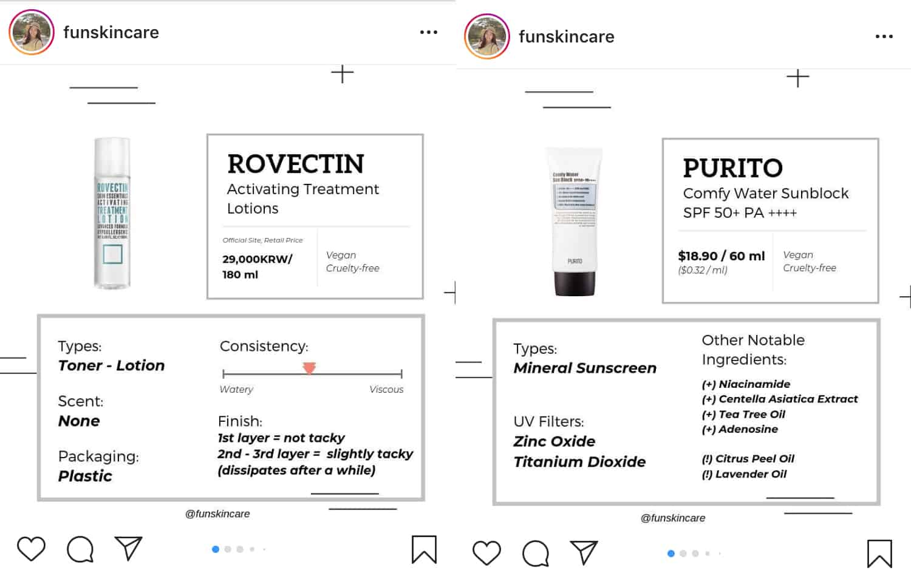
Make sure to choose a template that will blend well with your feed.
Look at how @funskincare’s templates seamlessly complement her feed.
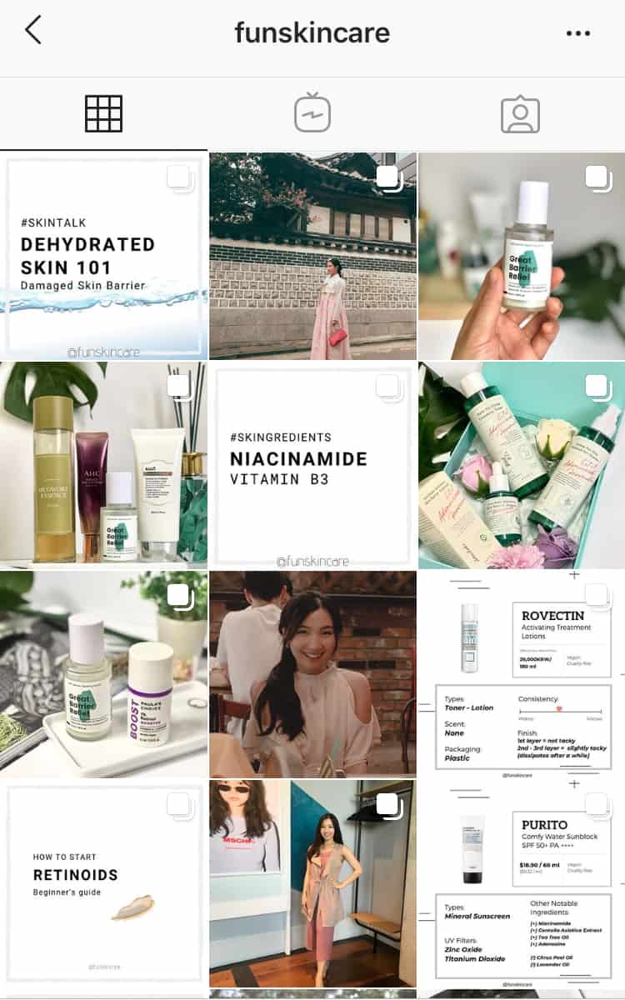
Remember, you don’t need to use a template for all your posts.
Why Use An Instagram Template For Your Business #1: Consistency
Consistency is essential when building a brand visual identity. However, this can be hard to achieve. This is where an Instagram template comes into the picture.
You can simply choose a template and stick to it. In doing so, you can create a cohesive brand aesthetic. Remember though to choose a template and messaging that resonates with your target audience.
Want to take this branding strategy even further?
Use Instagram story templates. This means using the same layout, filter, and graphics for your Stories! As a result, it catches your audiences’ attention. Plus your Stories will more likely be remembered!

How to make your branding consistent?
- Stay true to your Instagram aesthetic. This means using the same editing style or theme.
- Add elements of your website. This includes logo, font, or color palette.
Incorporate these elements in your Instagram template. Additionally, keeping these elements consistent in your posts and Stories will unify your brand aesthetic.
Why Use An Instagram Template For Your Business #2: Saves Time
Using an Instagram template mean you’re not making something from scratch. It takes the guesswork out since you know where to place your image, video, or text.
Here are a few template elements:
- Locations for adding images
- Backgrounds
- Infographics
- And other visual elements
You simply have to fill it in. For this reason, it’s a great tool for jumpstarting a content idea. No need to struggle coming up with different types of content.
Take these images from @mango. They used a simple template to showcase Nuria Val’s (@frecklesnur) travel adventures around the Azores.
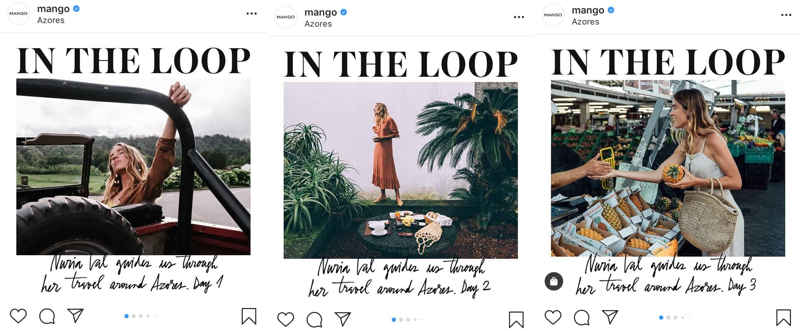
Another example is from @charcoal_clothing. Look at how they use Instagram story templates.
For one, they use templates to engage with the audience. Whey they’re asking the audience which clothes they prefer, they use this template.

Secondly, they use a different layout when showcasing behind-the-scenes.

Why this is good for your business?
It’s because your audience will easily identify your visual content. This boosts brand identification and awareness.
Why Use An Instagram Template For Your Business #3: Stand Out From The Rest
An Instagram template makes your content unique and easily recognizable. This gives you an edge over your competition.
Why?
Because users who look at your profile will know who you are. When they see your brand aesthetic elsewhere, they’ll recognize it.
Take a look at how @ritual uses their signature colors across their feed. They also use their signature yellow in these series of text posts.
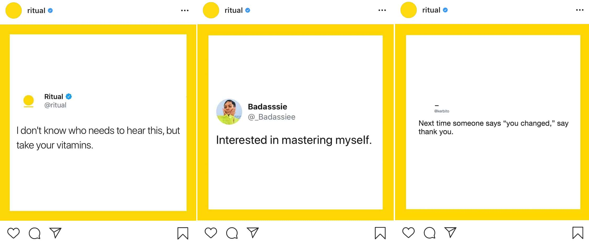
Another example is from @herschelsupply. They used this particular Instagram Story template when showcasing their backpack series.

This template stood out from the other content in users’ feed.
Remember, Instagram templates are created by expert designers. For this reason, no matter how you customize it, it’ll look fresh and interesting to your audience.
Now you know why you should seriously consider using Instagram templates!
Ready to create your own?
We’ve come up with a list of easy-to-use apps for creating a custom Instagram template.
4 Best Free Instagram Template Apps
Canva
Not a design wiz? No problem!
Canva is a very simple app. They have thousands of customizable free Instagram templates. Of course, they also have templates designed for other social media platforms.

To create an Instagram post on Canva, you have a few options:
For one, you can tap Create A Design.
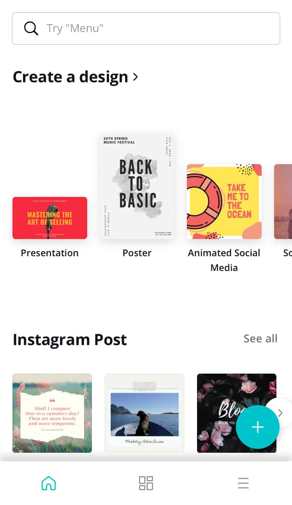
Under the Social Media section, choose Instagram Post or Instagram Story.
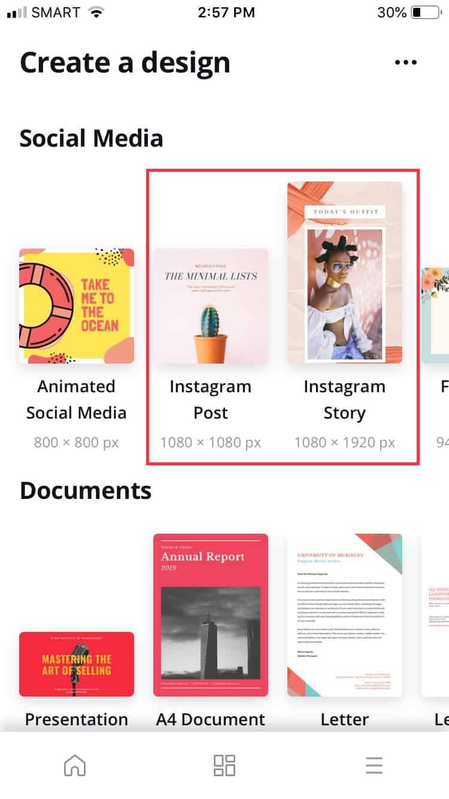
From here, you can start making your template from scratch.
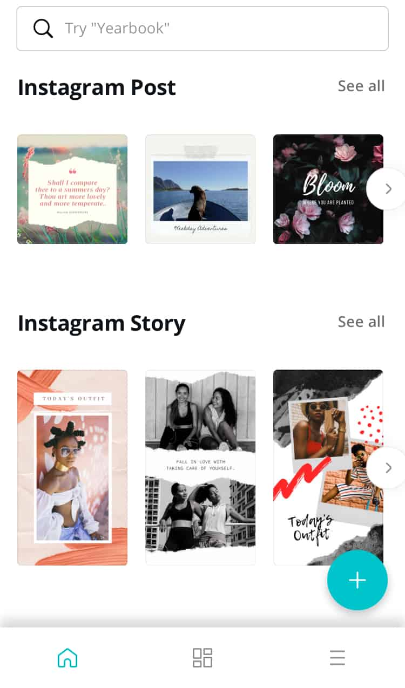
But what if you don’t want to start from scratch?
Don’t fret, Canva has you covered!
This app has pre-made layouts. All you have to do is upload your own images and edit text where needed. A free Instagram template has:
- Free stock images
- Plenty of fonts to choose from
- A bunch of creative layouts
However, you’ll need to upgrade to a Pro account ($12.95/month) if you want to use your brand fonts and colors.
Unfold
Looking for clean and modern Instagram story templates? Unfold has plenty of layouts guaranteed to make your content cohesive and appealing.
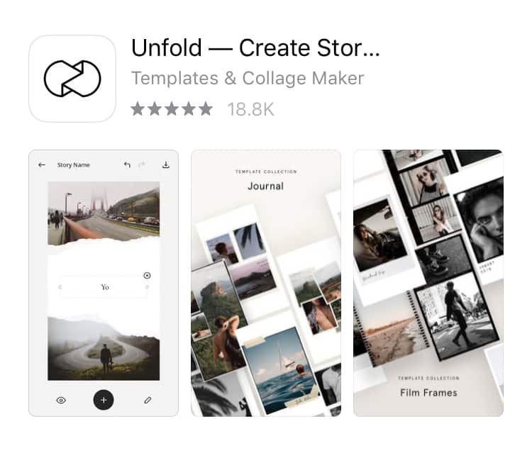
Why use Unfold?
- Clean layouts
- Customizable fonts
- Easy to add photos and videos
- Text placement suggestions
- Considered a toolkit for “storytellers”
Unfold is free to use for iOS and Android. You can also enjoy additional features if you choose to upgrade.
This free Instagram template app isn’t only for Instagram. You can also use it for creating Stories in other social media platforms, like Facebook.
Creating your first Instagram template is easy. Simply tap the white space and you’ll be prompted to name your Story.
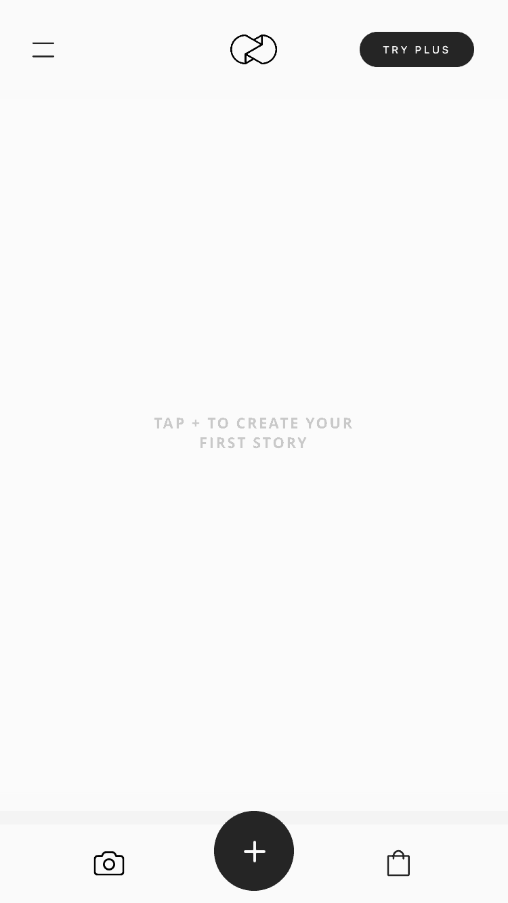
From there, you can choose from a variety of pre-made layouts.
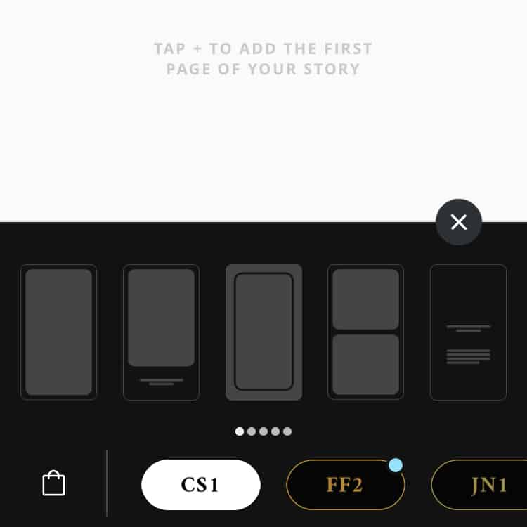
Simply add photos, videos, graphics, or text.
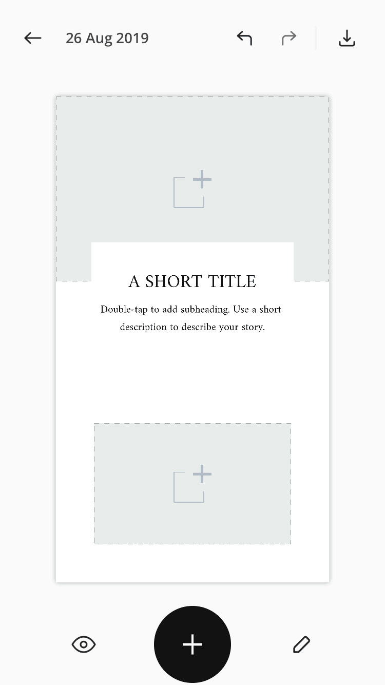
Unfold also has a “Story mode” feature where you can preview your post.
If you need easy-to-edit templates, Unfold is the app for you.
Shakr
If you want to take your video ads to a whole new level, use Shakr. It has the world’s largest video template library.
They have plenty of engaging video designs, some with the classic square format commonly seen on Instagram. Of course, these templates are fully customizable!
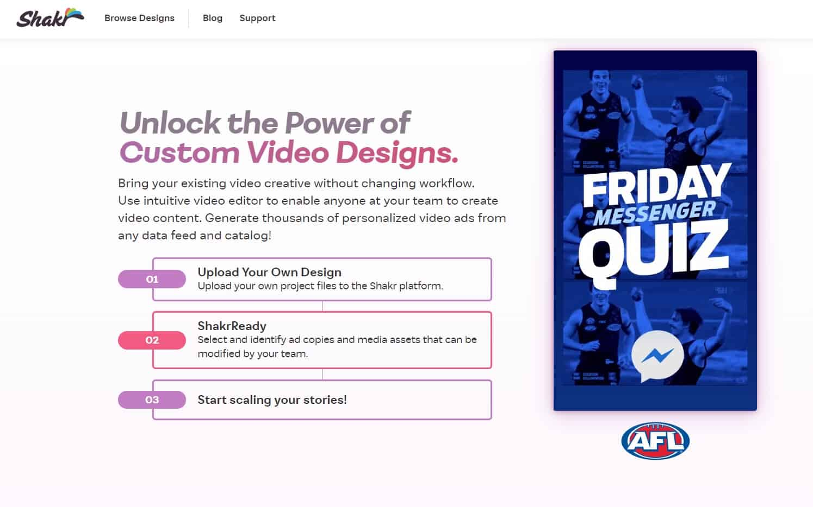
Here are a few of its features:
- Quick and easy. Simply choose a video design you like. Then drag and drop your own video or photo. Lastly, add text if necessary. You’ll be done in just 5 minutes!
- Variety of designs. Shakr already has over 2,000 video designs. More designs are added every week!
- Large media library. You’ll enjoy over a million stock images and video clips. Simply search for a keyword. Then add the stock image to your content for free!
- Pre-licensed music. Shakr has music tracks that are licensed for commercial use. No need to worry about copyright costs again!
- Private template. Lastly, use your in-house video production into a reusable Instagram template.
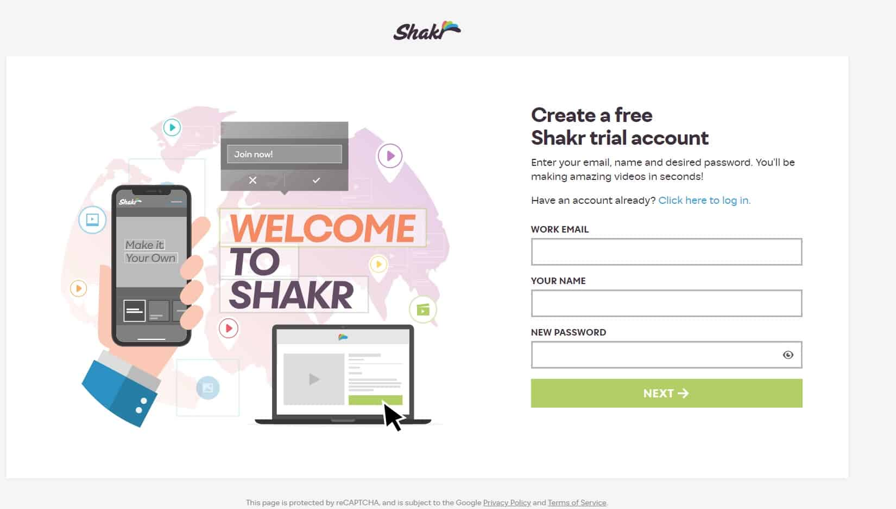
Bannersnack
Bannersnack is an online banner making tool that is also great for making Instagram sponsored posts and Stories.
It is a simple, user-friendly graphic design tool.
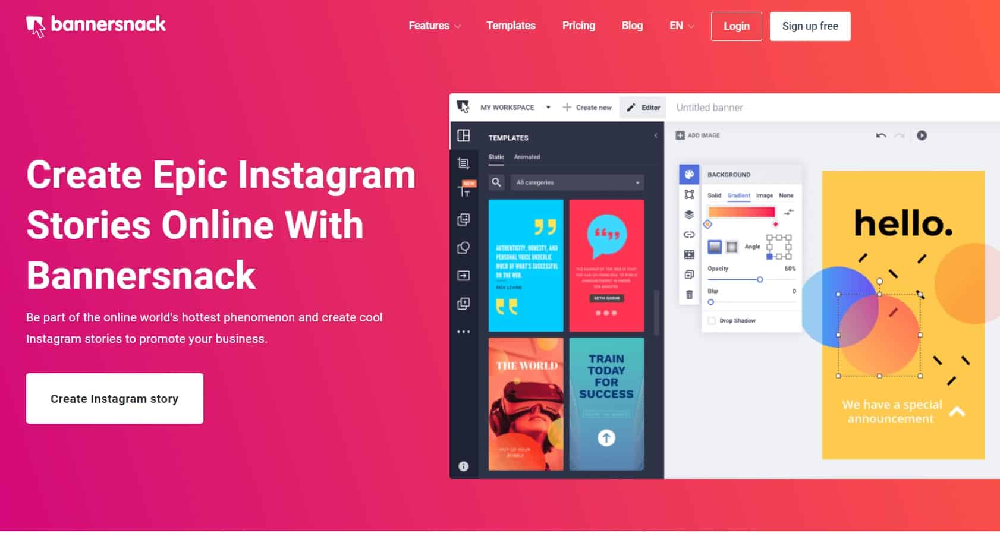
No need to make content from scratch! Choose from their wide selection of free Instagram template as a starting point. Customize it with your own pictures, colors, logo, and fonts!
They have all you need to create great content:
- Ready-made templates: They have tons of Instagram story templates – from food and drinks, how-to guides, and BTS stories.
- Professional stock images: With Bannersnack, you’ll have access to their database of stock images. Use as many images as you like!
- Trendy shapes and icons: This online tool has a huge collection of clipart.
- Popular fonts: Choose from a variety of fonts to convey your brand’s message. You can also upload your own fonts. Lastly, Bannersnack also has ready-made typography presets.
- Animation effects: Make your Stories stand out from the rest by adding animation effects.
Simply sign up to their website for free!
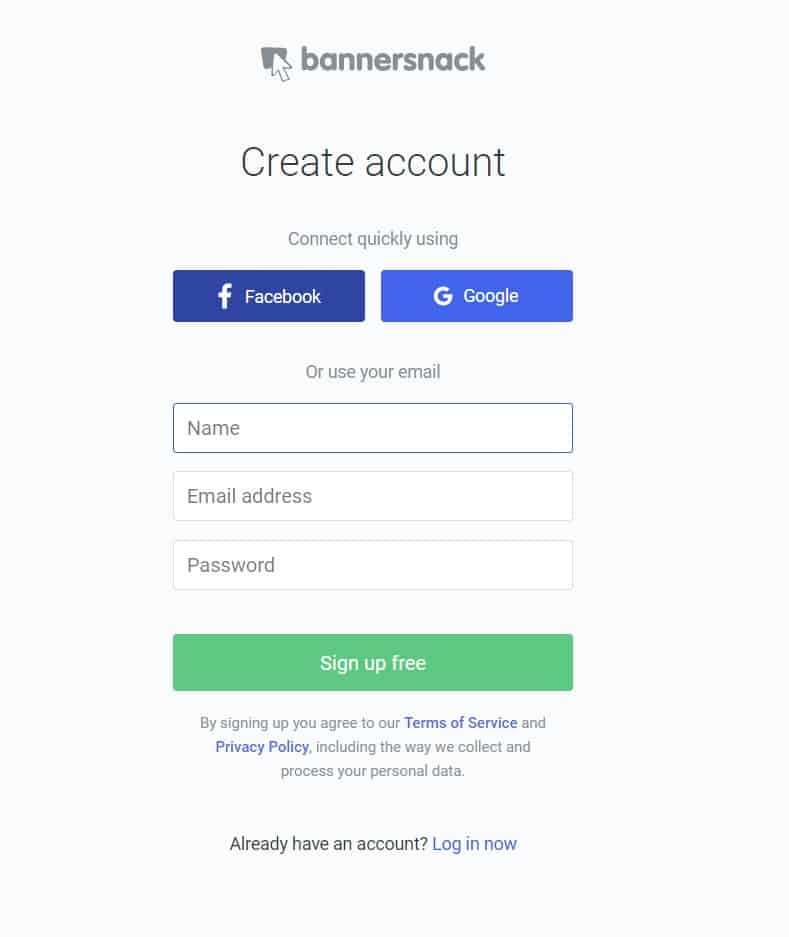
Once logged in, you’ll be directed to your “workspace”. Tap “Create New”.
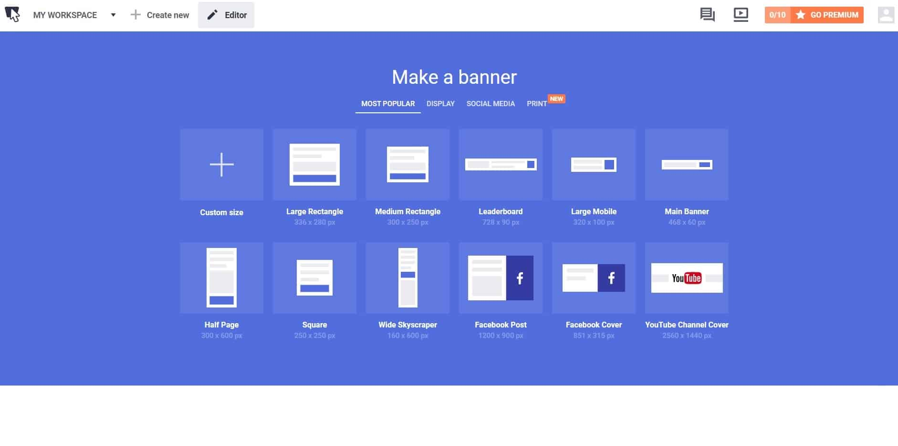
You’ll then be guided to your ideal Instagram template.
Which Free Instagram Template App Will You Use?
Here are a few things to take into account:
- Will you need to use your branded font and colors?
- Are you satisfied with the available free Instagram story templates?
- Do you mind upgrading or paying for exclusive features?
- Will you be working as a team? Do you need access for multiple team members?
With plenty of options in the market, how will you choose the right template?
Specifications: Make sure that the free Instagram template is the right size.
Customization: You should be able to edit some elements of the pre-made layout.
Style: The layout should match the content you plan to post. More importantly, it should have the same look and feel as your brand aesthetic. For instance, if you have a minimalist aesthetic, then look for simple and clean templates.
Versatility: Choose a template with plenty of options. In doing so, you’ll be able to use it for different types of content without looking redundant.
Post or Story Template?
When choosing an Instagram template, it’s best to find one that works for both post and Stories.
But how do you know if it’s made for both types of content? Take a look at the format and size.
Remember, Instagram posts are typically square. Plus, you can add a single type of media – either photo or video.
An Instagram Story, on the other hand, has a vertical format. You can add multiple media. This means you can add images and videos together. In fact, you can also add animations, polls, or questions.
We’ve discussed the wonderful benefits of using Instagram templates. Plus we’ve also listed some of the best free Instagram template apps. It’s time to create your own!
Tips For Creating Or Customizing An Instagram Template
Set A Style Guide
To stay on brand, make sure to stick to a strict style.
For one, take note of how you edit images and videos for your feed. Secondly, look at the colors you usually use.
These seemingly small details have a huge impact on creating a brand aesthetic. Your Instagram template must reflect your brand’s tone and identity.
Most importantly, stick to a specific style of template.

With thousands of beautiful template options, it can be tempting to use a different template for each post. But this could be detrimental in establishing your brand. In fact, your audience might not easily recognize your future posts.
Choose Brand Fonts
It’s always a good idea to add brand elements in your content. For example, use fonts similar to your logo or packaging.
For most Instagram template apps, you have to upgrade your account to Pro to add custom fonts.
Another option is to use complementary fonts. Free template apps already have a large font library. However, keep your font variety to a minimum – two at most.

Here are a few tips:
- Handwritten fonts go well with bold angular fonts
- Chunky sans-serif fonts look better with light serif fonts
- San-serif fonts are best paired with serif fonts
Incorporate Your Brand Colors
For effective branding, incorporate your brand colors. More importantly, keep your color scheme consistent!
In doing so, your audience will easily distinguish your content from the rest.
When using an app, it’s super easy to change the colors of your font and backgrounds in your template. Simply tap the element you want to change. Then choose the color you want.
Look at how @ritual uses their brand colors in their Instagram story templates. Yellow, blue, and white are predominant in their feed and Stories.

Add Interesting Elements
For instance, you can add animated videos. These are highly entertaining and gives that wow factor.
Adding animation makes your content super eye-catching. In fact, animation is a new trend right now!
An in-house graphic designer can help you with this. Or you can use pre-made animations in your chosen app’s media library.
Remember, use animations that will complement your brand aesthetic!
Another option is to add elements that encourage engagement. For example, you can add stickers. Question and poll stickers are very popular.
In Conclusion
Create or find an Instagram template that’s easy to customize. It should also work well with the type of content you usually post. Plus, it should match your visual style.
However, the most important thing to keep in mind is to choose a template that matches your brand identity. Don’t just pick one because it’s popular.
Remember, your audience is more drawn to brands that are authentic and engaging. With that said, your Instagram template must reflect who you are.


1 Comment